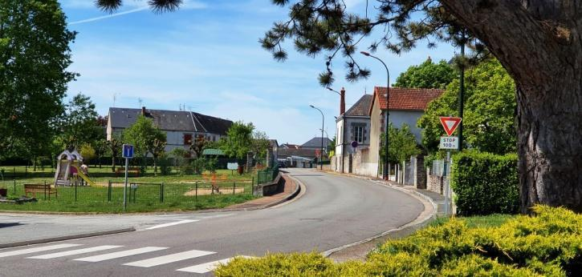

Les villages
Les villages et hameaux de Saint-Sulpice-Les-Feuilles.

L’age Bouillerand
- 1821 : 14 habitants
- 1846 : 6 maisons et 26 habitants
- 1901 : 31 habitants
Ce village est nommé Laqe Boulleylherant en 1485, Laige Boulherant en 1528, L’Age Boulhant en 1583.
La dîme était levée par le Seigneur de Puylaurent.
L’Age Maillasson
1901 : 1 maison, 1 habitant
Est cité en 1660.
Le Bardon
- 1846 : 2 maisons, 15 habitants
- 1901 : 4 maisons, 11 habitants
Par lettres de James Mamye, curé de la Châtre-au-Vicomte, du 11 fév. 1397, Raymond du Sehuc, damoiseau, vend à Louis Chiton, damoiseau, une rente de 3 sols seigle sur le moulin Bardon moyennant 9 livres.
Il y avait autrefois en cet endroit 2 moulins :
- L’un, détruit au XVIIIe siècle, se trouvait au-dessous de la chaussée de l’étang et dépendait du Seigneur de Lavaupot qui était propriétaire de l’étang ; dans le partage de Piégut, en 1449, il est attribué à Christophe Pot, l’étang et moulin Bardon, “ tant à bleds que à draps avec les molins et drapans ”;
- L’autre qui existe encore appartenait à Rhodes.
Bellevue
1901 : 1 maison, 6 habitants.
Fonderie de fonte, désigné au cadastre sous le nom de Marsaud.
Berlande
1846 : 2 maisons, 11 habitants
1901 : 2 maisons, 13 habitants
Ce hameau devait une rente de 10 boisseaux seigle à la Seigneurie de Mondon.
Il est appelé :
- Broulande en 1490,
- Brollande en 1565
- Brelande en 1583 et 1753
La forme Berlande est plus récente
Les dîmes sont versées au Seigneur de la Goutte-Bernard;
Le dolmen mentionné par M. de Beaufort a été détruit.
Boismandé
- 1821 : 78 habitants
- 1846 : 19 maisons, 90 habitants
- 1901 : 25 maisons, 111 habitants
Village important sur la route nationale ; la gendarmerie y a résidé de la Révolution à 1856; un groupe scolaire y a été édifié en 1889.
Suivant un arpentement dressé en 1610 par Just, arpenteur aux Chézeaux, ce village devait des rentes, une vinade et un « bian » aux Seigneurs de Rhodes, Montjouhan, Saint-Germain et la Goutte-Bernard (9389).
Le 8 juillet 1443, Hélion Chiton, écuyer, Seigneur du Couret, vend à Vincent Dupuy un setier d’avoine, mesure de la Terre-aux-Feuilles, sur le lieu de Petus à « Bost Mandiet ».
Le 21 oct. 1466, Gui Pot, Seigneur de Rhodes, baille à rente à Maché de la Chissarde l’héritage Bellot, à Bostmandiers, paroisse de Saint-Soulpize-en-la-Terre-aux-Feuilles, à charge d’édifier sous deux ans « une maison à deux aguilhes » moyennant 10 sols par an (9370).
Les registres d’état civil mentionnent divers décès de voyageurs survenus à Boismandé, en cours de route, notamment celui d’un marquis de Mun ; voici son acte de décès :
« L’an de grâce 1743 et le 4ème jour du mois de février, Monseigneur de Mun, seigneur marquis de Sarlabousse, chevalier de Saint-Louys, capitaine de cavalerie du régiment royal Pologne, seigneur de Bise et autres places, mari de dame Marie-Michelle de Cailleret, paroisse de Bise, diocèse de Comminges, venant de Paris et ayant esté arrêté d’une maladie à l’hotelerie de la maison royale de Boismandé, située sur le grand chemin dans ma paroisse, y est décédé en la communion de la Sainte-Eglise, âgé d’environ 60 ans ; duquel le corps a esté inhumé dans notre église paroissiale de Saint-Sulpice-les-Feuilles le lendemain de sa mort, le 15 février, après avoir été confessé le jour de sa mort par moy, curé de ladite paroisse ; ce que M. Bruno Butaud, curé des Chézeaux, Jean Meru surnommé Petitjean, homme de chambre de mondit sieur le marquis de Melun (sic), qui ont assisté au convoy, ont signé avec moy ; fait l’an et jour que dessus.
Signé: B Butaud, prêtre, curé des Chézeaux ; Petitjean, J. Danjan, curé de Saint-Sulpice-les-Feuilles. »
Le Bournazeau
Hameau incorporé à Saint-Sulpice ; la gendarmerie se trouve sur son emplacement.
C’était un fief relevant de Puylaurent. Le 17 sept. 1545, Maître Jehan Reignaud, Pierre de Vouldy et son fils vendent la métairie du mas du Bourgnazeau à Mathieu de Mailhasson qui, l’année suivante, la céda à Mathurin Pot. Le 29 déc. 1571, celui-ci rend aveu pour la Seigneurie du Bournazeau contenant 30 s. de terre ; il dit que la maison joint le chemin de Saint-Sulpice à Piégut et le chemin de la croix Sainte Valérie à Arnac (9325). Par son testament du 8 janv. 1575, Mathurin donnant tous ses biens à son neveu Christophe Pot, lui impose la charge de ne jamais aliéner cette seigneurie « pour l’amour de luy », (A. B.). Son désir a été respecté jusqu’au XVIIIe siècle, le Bournazeau étant resté jusqu’à cette époque entre les mains des seigneurs de Lavaupot, descendants de Christophe ; le 15 juil. 1749, le comte de Bouthilier la vendit à Silvain Delagarde, Seigneur de la Pérusse (9325).
La Boutinotière
- 1846 : 5 maisons, 20 habitants
- 1901 : 7 maisons, 22 habitants
La Boutinotière, 1449, doit son nom à une famille Boutinot qui y existait encore en 1490. Les habitants étaient astreignables au moulin de Bantard. La dîme appartenait au Seigneur de la Goutte-Bernard.
Par abréviation on trouve ce nom écrit : La Butinotière, 1665, et La penotière, 1735-1774.
Les Bras
- 1821 : 49 habitants
- 1846 : 11 maisons, 51 habitants
- 1901 : 9 maisons, 48 habitants
Village dont l’importance a bien diminué : en 1595, le Seigneur des Chézeaux, qui le possède, dit que c’est « un beau village contenant 25 fermes de logis » (9398). Il est appelé le Brac en 1449 et 1750; le Bract en 1595 et 160l. La forme plurielle ne se rencontre qu’en 1756.
Les Bras. dolmen en partie renversé, dessiné par M. de Beaufort.

Chéniant
- 1846 : 7 maisons, 26 habitants
- 1901 : 11 maisons, 40 habitants
Sans doute une contraction de Chez-Niant; on écrit aussi Chaignant.
Dans le pacage dit de Lacou, M. de Beaufort a retrouvé une table de dolmen.
Cheuget
- 1846 : 14 maisons, 53 habitants
- 1901 : 13 maisons, 48 habitants
Village qu’on trouve mentionné dès 1254 dans le curieux acte que nous publions ci-dessous, le plus ancien que nous ayons rencontré en français.
« Sachain tuyt présens et venir que ge Hélion de la Porta, seignor du chasteau de Joancès, dommeyseau, connoys et confesse moy havoir donné perpetuellement, cessé et quitté à touz temps toutz l’éritage et tenus laquella fuyt ho poot appartenir, on temps jadis ho qui passez est, hau Roy de Joancès, mon homa, loquiès héritage et tenua est assis et pouzé on village de Sougier en la parossia de Saint.Sulpiza, lequiès ge ay trové vacans et sans nuls héritiers, au Johan, filh Johan de Sougier, mon homa, et ha ses héritiers présens et venir en payant et rendant chescun an touz les devers, tailhes, rantes au dit lieux et héritage appartenant, ensembleament arm una piessa de terra appellea la piessa à la Dompnea pouzea ond. village, delaquiella piessa de terra peara lo dit Johan, fils Johan de Sougiers, chiescun an de cens à moy Hélion ho à mes héritiers troys boisseaux de segle à la mesura de la Terra-au Foylhes, am lesquielles chouses dessus dites payant et rendant, ge avandy Hélion de la Porta, segnor dessusdit, bailhe les avandites chouses à l’avandy Johan et l’envist et saizi et le li permetta guarantir et deffendre en tella forma et maniera que led. Johan, fils Johan de Sougier, bastira ha fara bastir hou dit Roy una mayson on village de Sougier laquiella mayson tenra led. Roy tant que vivra et emprès la mort dudit Roy de Joancès, la dita mayson tornara au dit Johan, fils Johan de Sougier, ho à ses héritiers, présens ho venir, promettant que Hélion de la Pourta en bonna foy les chouses dessus dites tenir et guerder pour moy et pour les miens, en contre non venir deyssi en avant, en contre non venir pour moy ne pour autre et en tesmoinh de vérité ge, avandy Hélyon ay pouzé mon scel en cetes présentes lettres, donné présens tesmoinh Johan Giraudet de Joancès et Pieure Byougon et Jehan Pelisson de Souzet le lundi enprès la festa de Pasques l’an de grâce mill CCm cinquanta et quatre.
(Parchemin, E. 9 390. Le sceau manque). »
En dehors de cette forme Sougier, nous avons encore relevé Seugier, 1525 et 1572, Cheux-Geay en 1669, Cheujay en 1763.
La dîme était perçue par le Seigneur de la Goutte-Bernard.
Des ruines romaines y ont été rencontrées en 1881 par l’abbé Joyeux qui fouilla 10 ou 12 compartiments: quelques-uns avaient leurs murs en stuc recouverts de peinture ; des
conduits, des marbres, des poteries, 2 étuis, une lance y furent trouvés.
Souterrain-refuge indiqué par M. de Beaufort.
Chez-Bardin
- 5 maisons, 21 habitants
- 1901 : 4 maisons, 16 habitants
Appelé tout simplement les Bardins en 1573 et 1677.
Chez-Bouchault
Hameau compris dans Saint-Sulpice, il dépendait autrefois de Lavaupot ; chaque feu devait au seigneur une corvée par semaine avec bœufs et charrette, plus une vinade par an pour aller quérir une pipe de vin au Blanc ou à Saint-Marceau.
Les habitants étaient encore tenus de faire le guet au château et de moudre au moulin banal.
Cheux Bouschault, 1538
Chez-Colas
Métairie située dans Saint-Sulpice ; un plan de 1770 montre qu’elle se trouvait sur l’emplacement de la métairie actuelle de M. Mondelet. Elle était dans le fief de Lavaupot.
Chez-Dandin
Il n’y a plus qu’une maison inhabitée, mais autrefois, il y avait une agglomération, dont les habitants devaient le guet, à Puylaurent ou 3 sols par feu.
Cheulx Pierre Dandin. 1532.
Chez-Grosjean
- 1846 : 7 maisons, 33 habitants
- 1901 : 3 maisons, 13 habitants
S’appelait :
- 1580 le guay des Mazeaulx, sur le chemin de Lavaupot aux Bussières ;
- en 1595 on lui donne encore ce nom concurremment avec celui de Chez-Gros-jean ;
- 1658, Chez-les-Gros-Gens.
Chez-Renard
- 1846 : 6 maisons, 23 habitants
- 1901 : 11 maisons, 29 habitants
Ce village a porté différents noms :
- 1556 : métairie des Gorces-Cheux-Renard appartenant à Mathurin Renard
- 1561 : le village des Gorces où habitent Etienne et Mathurin Regnard
- 1568 : les Gorces
- 1595 : les Gorces Renard
- 1613 : id. Dépendait de la Seigneurie des Chézeaux (9398).
La Chirade
- 1846 : 4 maisons, 22 habitants,
- 1901 : 2 maisons, 14 habitants
Citée en 1457 ; on y voit une vieille maison présentant au-dessus de la porte une hotte défensive, sorte de mâchicoulis.
Un souterrain-refuge y a été découvert il y a quelques années.
La Font de Piegut
Lieu où était construite une métairie dépendant de Piégut, démolie au milieu du XIXe siècle. Sylvain Pot, est dit Seigneur de ce lieu en 1659.
La Garde
- 1846 : 5 maisons, 26 habitants
- 1901 : 9 maisons, 34 habitants
En partie sur la route nationale. Dépendait de Piégut ; un logis y fut édifié au XVIIe siècle pour un cadet de la maison de Pot. Jacques Pot, époux d’Anne de Grailly, y décéda le 25 pluviôse an IV. Le lieu noble de la Garde lui avait été attribué dans la succession de son père, Louis, en 1742.
Les Gouges
- 1846 : 5 maisons, 26 habitants
- 1901 : 9 maisons, 34 habitants
En 1402, Jean de Mouhet possède des rentes sur les Gouges : le 9 mars 1544, Jeanne de Verine, fille de Jean et d’Anne de Mouhet, aliène ces rentes qui comportaient une journée d’homme à faucher et une vinade. Ce village devait en outre des redevances à Gençay et à Lavaupot ; les Gouyges, 1537. J.-B. Bernut, greffier de Rhodes, prend, en 1783-1788, le titre de seigneur des Gouges.
Les Granges
- 1821 : 14 maisons, 49 habitants
- 1846 : 7 maisons, 68 habitants
- 1901 : 31 habitants
S’appelait :
- 1619 : Les Granges de Bantar
- 1736 : les Granges Bantar
Jançay
- 1846 : 1 maisons, 5 habitants
- 1901 : 2 maisons, 3 habitants
Il y avait là un moulin dépendant de la seigneurie de Jançay dont nous parlerons plus loin. Il a été détruit au XIXe s.
La Lande de Virvalais
1901 : 1 maisons, 3 habitants
Construction récente.
Lavaupot
- 1821 : 61 habitants en
- 1846 : 13 maisons, 51 habitants
- 1901 : mêmes chiffres
Fief relevant de Brosse d’abord appelé Lavau, puis possédé par la famille Pot qui lui a laissé son nom.
Il valait 8o l. de rente en 1552.
Lire la suite sur la monographie de Saint-Sulpice-les-Feuilles :
https://monographie-st-sulpice-les-feuilles.fr/lavaupot/
Maillasson
- 1846 : 4 maisons, 24 habitants
- 1901 : 6 maisons, 28 habitants
En 1596 “ le village de Maillasson contenant en basty et en masures 15 fermes de logis ”, dépendait de Jançay (9392).
La Maison Rouge
- 3 maisons, 20 habitants
- 1901 : 2 maisons, 9 habitants
Ancienne maison fortifiée relevant de Mondon.
Le 15 juin 1517, Jacques de Montbel, Seigneur de la Maison-Rouge, reconnaît tenir à foi et hommage-lige, au devoir d’une paire de gants blancs, à mutation de seigneur et d’homme, de Charles, duc de Savoie, prince et vicaire perpétuel du Saint-Empire, marquis en Italie, prince de Piémont, Seigneur de Mondon, et de son frère, comte des Génévois, “ l’hostel, maison forte et hebergement de la Maison-Rouge, avec ses préclostures et basse-court et les jardins renfermés de murailles et palitz vallant 25 s. de rente ”.
Cette Seigneurie avait été acquise par son père, François de Montbel ; en mars 1517 (v. s.), il était en procès avec sa mère, Françoise Vergnaud, qui réclamait ses droits.
Le 3o juil. 1541, cette maison forte est vendue par Mathurin Lamberthie, écr, et Anne de Vérines, sa femme, à Mathurin Pot, Seigneur de Lavaupot (2400 et arch. de Turin).
Mathurin Pot, dont nous avons déjà parlé, était, nous dit une enquête de 1590, « un homme riche et oppullant ayant plusyeurs deniers comptans jusques à la somme de 20000 l. et plus qu’il prestoit.” Il possédait encore les Seigneuries de Martinet et du Bournazeau.
Il fit son testament le 8 janv. 1575 et élut sa sépulture dans l’église de Saint-Sulpice ; il donna 200 l. aux pauvres et légua tous ses biens à son neveu Christophe Pot à charge de divers legs.
Etant tombé en démence, un conseil de famille eut lieu à la Maison-Rouge le 3o mai 1584 où furent présents ses parents : Guillaume Pot, prévôt de deux ordres du roi, premier écuyer tranchant, maître des cérémonies de France, Seigneur de Rhodes, “ tant comme haut justicier de Mondon que comme parent ”. François d’Aubusson, Seigneur de la Feuillade; François Faulcon, Chevalier de l’ordre du roi, baron de Saint-¬Pardoux; Christophe de Carbonnières, gouverneur de Rocroy; Jacques Estourneeau, Seigneur de la Mothe de Tersannes; René de Bersolles, Seigneur des Bastides; Jacques de Vérine, Seigneur de la Boche de Mouhet ; Marc Deaux, Seigneur de la Conilière; Gui de L’Age, seigneur de la Palisse, et Jean Pot, seigneur de Piégut. On lui donna pour curateurs Faulcon et de l’Aige.
Melchior Chardebœuf est seigneur en 1631-1633.
Le 6 juil. 1736 la Maison-Rouge est vendue par le duc de Laval à Léonard Dalagarde, marchand, aux Granges-Bautard. On voit à la Maison-Rouge une porte ancienne surmontée d’une accolade ; au-dessous de celle-ci est sculpté un écusson portant une fasce avec un croissant en chef, pièces qui se retrouvent dans les armes des Chardeboeuf.
La Maison Rouge
- 1821 : 40 habitants
- 1846 : 15 maisons, 70 habitants
- 1901 : 7 maisons, 23 habitants,
S’appelait :
- 1481 : La Marselle
- 1559 : La Mardelle
On appelle Mardelles, en Berry, des excavations régulières présentant la forme d’un cône renversé à base elliptique de 30 sur 40 m de diamètre, au fond desquelles on trouve des débris de l’industrie humaine et des ossements ; leur origine a donné lieu à de nombreuses controverses ; on les attribue communément à l’action des eaux. Elles ont été souvent utilisées comme silos. Il n’y a pas trace d’une semblable excavation dans ce village.
Charles Bault, écuyer, seigneur du Vergier et de La Mardelle, épousa par contrat du 31 mai 1629, Jacquette Martin du Puyvinaud, d’où Léonarde, femme d’Henri Dalesme (Nadaud).
Le Mazier
- 1846 : 7 maisons, 38 habitants
- 1901 : 8 maisons, 28 habitants
S’appelait :
- 1449 : Les Mazoiers
- 1537 : Le Mazurier
Le village du Mazuiers devait une vinade à quatre boeufs et charrette pour aller quérir une pipe de vin au pays d’Argenton ; ce droit est vendu le 3o mai 1545 par Jeanne de Vérines, veuve de Mathurin Lamberthie, seigneur de Laffaict, à Mathurin Pot, seigneur de Lavaupot (9387).
Claude Gaucher est dit seigneur du Mazier en 1688-1707 ; sa fille, Gabrielle, femme de Jacques Bastide, conseiller du roi, à Montmorillon, le posséda ensuite. Le village était dans la mouvance de Piégut.
Le 4 mai 1772, Jean Gaucher, marchand à La Villaubrun, vend le lieu du Mazier à René et Jean Apierre, moyennant 10.000 livres.
Le Monteil
- 1821 : 43 habitants
- 1846 : 11 maisons, 52 habitants
- 1801 : 10 maisons, 45 habitants
« Le dimanche jubilato 1363, en la garde du scel établi à Montmorillon pour le roi d’Angleterre, Jean de Monteys, damoiseau, et Huguette de La Selle, sa femme, accensent à Jean Arnathon, une tenue vacante par la mort de Fradet… de Monteys, à charge de deux bians, l’un pour conduire du vin d’Argentan à Monteys et l’autre pour la moisson ou le foi n; quand il sera employé à ces corvées, il sera défrayé de pain (9370). »
Le Montais, 1449.
Par sentence du 13 août 1544, il est reconnu que les habitants de Montet sont astreignables au moulin de Piégut ; ce droit était réclamé par le seigneur de Puylaurent, à qui ils devaient la dîme et le guet (Gén. Pot).
Moulin de Lavaupot
Le 21 nov. 1406, Guillaume Herbert, veuf de Sybille Laseille, dame de Lavau, au nom de ses enfants, Guion et Marguerite, baille à rente à Jean Gaullier, de Derable, diocèse de Bourges, “ la méson et moullins de Lavau, l’un à drap, l’autre à blé, avec cours de eaue, motaige, plassaige ”, moyennant 4 l. 5 s.
Le 8 janv. 1449, Gui de Chauvigny renouvelle ce bail à Denis Gaulier, messire James Gaulier et autres : il leur cède une place contenant une boisselée située “ en nostre terre de la Vaulx, auprès de nostre grand estang à l’endroit de l’estat ancien d’icelluy, jouxte certaines vergnées et sauzées et jouxte l’estat qui a esté nouvellement aud. estang et tenant à la chaussée ”, avec faculté de construire un moulin, tant à blé qu’à drap.
En 1490, le seigneur de Lavau fit édifier un nouveau moulin au-dessous de l’écluse de l’étang. Il est affermé 30 setiers (set.), seigle en 1493 ; 48 set. seigle et 2 set. froment en 1546 ; 58 set. seigle, 2 set. froment, 4 l. et 2 gâteaux de roi en 1571.
Le 8 janv. 1532, Macé et François Gaulier vendent au même leurs droits dans le moulin neuf au-dessous de la chaussée de l’étang et dans les moulins vieux situé au-dessous du village (9386). Ces derniers paraissent disparus.
Le Moulin Plet
1901 : 2 maisons, 16 habitants
Montrenault
- 1821 : 44 habitants
- 1846 : 8 maisons, 39 habitants
- 1901 : 10 maisons, 32 habitants
Dépendait de la seigneurie de Jançay : le 7 mai 1404 des terres à Mont Regnaud sont données à bail par le seigneur de ce lieu à Jean de Mont Regnaud. En 1449, le bois de Montreignaud appartenait à Christophe Pot.
Le Noyer
- 1821 : 67 habitants,
- 1846 : 21 maisons, 75 habitants
- 1901 : 24 maisons, 98 habitants
Fief relevant de Brosse, il vaut 50 l. de rente eu 1552.
Cette seigneurie appartenait, au commencement du XVe siècle, à Raoul Pot, seigneur de Piégut, qui laissa, entre autres enfants, Christophe, seigneur de la Vau et Ysabeau, épouse de Régnier de Présigny, chirurgien.
Christophe vendit en 1459, “ le lieu et houstel du Nougier, cens, rentes, garennes et dîmes ”, avec des héritages à Montreignault, à Etienne le Joincteur, moyennant huit vingts livres. Ysabeau, usant de son droit de retrait lignager, somma le Joincteur de lui délaisser cette seigneurie et en même temps lui fit l’offre accoutumée.
Le Joincteur produisit deux témoins qui prétendaient que cette offre n’avait pas été faite dans le délai légal : Marsault du Nougier et Pierre Dubrac. A quoi la demanderesse répliquait que Marsault du Nougier était de serve condition et serf du défendeur, à cause de son village du Nougier, et qu’il lui avait promis que s’il gagnait il l’affranchirait de toute servitude ; qu’il avait été condamné à Brosse pour faux-témoignage et qu’il s’était parjuré en jugement ; il était tenu et réputé larron ; Pierre Dubrac, lui, avait été convaincu d’avoir emblé 50 écus à messire James de la Vau, prêtre. Une sentence du sénéchal de Montmorillon, donnée ès grands assises royaux, le 25 mars 1465, adjugea le Noyer à Ysabeau en validant ses offres de retrait (9,386).
Ysabeau dut, dans la suite, abandonner ce fief à son neveu Gui Pot, que nous trouvons portant le titre de seigneur du Nougier en 1493. Il avait épousé Françoise de la Marche. Ses enfants furent
1° François, prieur de. Prunet, en 1541.
2° Jacques Pot, qui n’eut qu’une fille, Marie, mariée à Jacques de Sandelesse, seigneur de Champgiron.
3° Claude, qui eut Nicolas Pot, mort sans enfant.
4° Gabrielle, mariée par contrat du 20 avril 1545 à Gilbert de Biencourt, seigneur de Lesclauze.
5° Jeanne.
Par un partage fait après la mort de Gui, François avait pris pour son droit d’aînesse les deux tiers du fief du Nougier en Poitou, le manoir de Boisgenest avec les préclotures ; le surplus avait été attribué à ses frères et sœurs ; mais à la suite des décès de divers de ces derniers, un nouveau partage fut fait le 9 fév. 1555 entre la dame de Sandelesse, Gabrielle et Jeanne ; la première eut la métairie, le moulin et l’étang de Boisgenest et les deux autres tous les biens situé en Poitou.
Le 18 déc. 1556, Gabrielle et Jeanne reconnaissent, en présence de Gabriel du Peyroulx, prieur d’Aubusson, que de Biencourt a dépensé plus de 3ooo l. dans ses améliorations de Boisgenest et du Noyer.
Jeanne étant décédée sans enfant, la dame de Sandelesse, qui avait épousé en secondes noces Guy de la Court, écuyer seigneur du Peschier, renonça à tous ses droits sur sa succession.
Jacques de Biencourt, seigneur de Boisgenest et du Noyer, fils de Jacques, épousa, par contrat du 3o avril 1567, Jeanne Meuron, fille de feu Guillaume, lieutenant général de la Marche. Leur fils, Charles, seigneur des mêmes lieux, se maria le 3 février 1592 à Françoise de l’Etang. C’est lui sans doute qui vendit le Noyer à René de l’Age, conseiller du roi en ses conseils d’Etat et privé, seigneur de Puylaurent. il en est dit seigneur en 1619-1623 (A. B.).
Le fameux duc de Puylaurent le posséda ensuite et en 1660 il appartenait à Marie Philippe, veuve d’Etienne de Chamborand.
Une sentence du 23 mars 1533 déclare que les habitants sont tenus d’aller moudre au moulin bannier de Lavaupot tant que le moulin du Noyer ne sera pas reconstruit (9 387)
Le 20 juillet 1820, 4 maisons y furent incendiées criminellement; à cette occasion, la duchesse d’ Angoulême envoya un secours de 300 F.
La Perelle
- 1846 : 1 maisons, 5 habitants
- 1901 : 8 maisons, 5 habitants
Lieu-dit au N. de Saint-Sulpice où des maisons se sont construites depuis une cinquantaine d’années.
Le mas de La Peyrelle, 1511. Ce hameau est désigné au cadastre sous le nom de Chez-Alamargot;
La Perusse (ou Peurusse)
- 1821 : 34 habitants,
- 1846 : 8 maisons, 37 habitants
- 1901 : 10 maisons, 61 habitants
Fief et moulin relevant de Puylaurent. On écrit aussi Peurusse.
Nous avons relaté plus haut les difficultés qui, en 1524 – 1526, surgirent entre le duc de Savoie et François Pot, seigneur du Noyer et de la Pérusse, au sujet de la digue du moulin de Bantard que le duc avait fait élever, inondant ainsi le moulin de la Pérusse. Dans les pièces de ce procès, il est dit que ce fief appartenait naguère à Gabriel de Cretay, qui l’avait vendu à Hugues Audoulcet, de Saint-Benoît ; il était. ensuite advenu à Gui, père de François, par défaut d’hommage ; Gui le possédait en 1503 (9 380). La dîme qui appartenait à Puylaurent valait 17 set. seigle en 1637 ; les habitants devaient le guet à cette seigneurie ; au XVIIe siècle ce droit avait été converti en une somme annuelle de 3 sols par feu.
C’est au-dessus de ce village, entre la route d’ Arnac et le vieux chemin, dans le champ des Maudières, qu’ont été trouvées, vers 1883, les urnes dont nous parlons plus haut.
Etienne Delagarde, seigneur de la Pérusse, 1747 ; Silvain Delagarde, seigneur dudit lieu, 1747-1774.
Peuchaud
- 1821 : 57 habitants,
- 1846 : 17 maisons, 68 habitants
- 1901 : 10 maisons, 40 habitants,
La forme de ce nom est récente ; nous trouvons, en effet
- 1499 : Puychault
- 1525 : Puyschault
- 1532 : Puychault
- 1659 : Puischaud
La dîme appartenait à Puylaurent ; elle était affermée en 1637 avec celle de l’Agebouillant, 13 set. seigle et un set. froment.
M. de Beaufort signale à Peuchaud un dolmen dont la table a été brisée.
Le Peu Guillebaud
Village disparu qui se trouvait au-dessous de Puiferrat en descendant vers Piégut ; des terres portent encore ce nom. Ce village, qui dépendait du Noyer, existait encore en 1660 (9400).
On le trouve nommé :
- 1449 :Payguilbaud
- 1573 : Le Puy Guilhe-baud
Des ruines gallo-romaines y ont été signalées par M. de Beaufort et non loin, dans la terre des Grandes Pièces, un souterrain refuge.
Peupiton
- 1846 : 14 maisons, 72 habitants
- 1901 : 15 maisons, 69 habitants
Le plus joli site de la commune dans le bas, un vieux moulin, tout moussu, fort pittoresque ; dans le haut, une route en corniche et les premières maisons du village ; un souterrain refuge y a été trouvé en 1899. Vers la même époque, on y a découvert des monnaies d’argent de Louis XV.
Nous le trouvons désigné
- 1449 : Puypiton
- 1496 : Puypithon
- 1523 : Puypicton
- 1606 : Peupicton
Une famille Pithon, qui lui a donné son nom, habitait encore ce village en 1667.
Le seigneur de Lavaupot percevait sur Peupiton un droit appelé le retour des bœufs, qui était dû par ceux qui allaient labourer en certains lieux. La dîme appartenait à Puylaurent; elle était affermée 7 set. seigle en 1637. Le moulin de Peupiton était le moulin banal de la seigneurie de la Goutte-Bernard. Dans une transaction du 14 mai 1522, entre le seigneur de Jançay et celui de la Goutte-Bernard, le vill. du Puys reste à ce dernier avec les droits de justice et de moulange.
Les Peux
Village cité en 1518 comme étant près de la Roche.
C’est sans doute le même qui est appelé
- 1466 : Podium
- 1525 : Le Peust
- 1587 : Le Peux
La dîme du Peu de la Boche, 1572.
Dépendait de la Chaume-Baptetaud. Il y a aux environs de la Roche plusieurs lieux-dits qui portent le nom de Peu. M. Leroux a publié dans ses Chartes, chroniques, etc., une charte du 25 août 992, portant "donation à Saint-Martial de Limoges d’un alleu sis in villa quœ dicitur Alpoi, in parrochia S. Sulpicii". C’est peut-être un de nos Peux.
Piegut
- 1846 : 8 maisons, 42 habitants
- 1901 : 3 maisons, 25 habitants
Très ancien fief relevant de Brosse, qui, depuis plus de six siècles, appartient toujours à la même famille évalué 100 livres de rente en 1552.
Lire la suite dans la monographie de Saint-Sulpice-les-Feuilles : https://monographie-st-sulpice-les-feuilles.fr/piegut/
Puiferrat
- 1846 : 19 maisons, 117 habitants
- 1901 : 25 maisons, 107 habitants
Nommé Puy-Ferat, 1449.
Les habitants de ce village étaient tenus chaque année d’aller chercher à Lavaupot, dont ils dépendaient, “ un fuz de pipe pour le conduire à Argenton, Saint-Marsaud, Saint-Gautier ou le Menou ” et le ramener plein (Gén. Pot).
Daniel Pot, seigneur de Puiferat, 1683-1715, épousa Anne Martin, d’où un fils mort au service.
La dîme appartenait à Puylaurent ; en 1637 elle était affermée 14 sols et 4 boisseaux de seigle.
Ratenon
- 1846 : 19 maisons, 87 habitants
- 1901 : 20 maisons, 63 habitants
Le 6 février 1447 les habitants reconnaissent devoir diverses rentes à Piégut. Ils sont tenus de faire chacun leur tour, chaque jour de la semaine, guet et garde à la forteresse et chastel de Piégut et d’être ses justiciables de serve condition (Gén. Pot).
Les Rebras
- 1846 : 19 maisons, 84 habitants
- 1901 : 23 maisons, 75 habitants
Comme pour les Bras, la forme plurielle employée actuellement est récente
- 1449, 1659 : le Rebrac
- 1519,1541 : le Rebral
- 1738-1750 : le Rubrac
Ce village dépendait de Piégut à qui les habitants devaient une corvée par semaine et la dîme.
La Roche
- 1821 : 41 habitants
- 1846 : 10 maisons, 58 habitants
- 1901 : 13 maisons, 53 habitants
Mentionnée eu 1449. Le 25 mars 1554, Mathurin Pot, seigneur de Lavaupot, et Jacques, son frère, affranchissent les habitants de ce lieu d’une corvée qu’ils leur devaient chaque semaine, à charge de payer une rente de 2 l. 9 s. Ils se réservent le droit de vinade (9389). François Peuchaud, seigneur de la Roche, 1758-1786.
La Tuilerie de Maillasson
Figurait au cadastre.
Le Rochillon
1901 : 1 maisons, 7 habitants.
La Valette
- 1846 : 8 maisons, 38 habitants
- 1901 : 10 maisons, 43 habitants
Le 27 mai 1395, devant Gilles Auboutet, notaire juré, Perrotin de Parnac et Agnès Aillou, sa femme, arrentent à Jean Penètre des immeubles à la Vallette :
“ une terre joxte la plasse de la Valete ; ung ort* appelé le Chiron; une lèze d’ort assise joxte le chappau de la maison au Masson; une pledure** de maison joxte la maison Autort. ”
(Lettres de Perrot Souhe, garde du scel pour le duc de Berry à Montmorillon) (9388).
- Jardin.
** Terrain vague propre à bâtir.
Sieurs : 1644, Pierre Petitpied, lieutenant du comte d’Harcourt ; 1649-1659, Charles Petitpied, avocat en Parlement ; Louis Petitpied, 1672-1700 ; Vincent Petitpied, 1710.
La Villaugé
- 1846 : 9 maisons, 42 habitants
- 1901 : 8 maisons, 33 habitants
La Villeaujay, 1449.
Le seigneur de Lavaupot y avait droit de « censive » et percevait une poule par feu suivant reconnaissance du 25 fév. 1547. Le commandeur de Morterolles prenait diverses rentes sur la Ville ou Jay en 1555 (H. 462). La Villaugey, 1660.
Virevalais
- 1846 : 13 maisons, 88 habitant
- 1901 : 17 maisons, 60 habitants
-
1361 : Villa Valeis
- 1493 : Ville Valloix
- 1507-1520 : Villevaloix
- 1513 : Villevaley
1549 : Virvalleys
La dune de Virevalais dépendait de la seigneurie de la Chaume Batetaud aux Chézeaux.
M. de Beaufort indique au N. du village un dolmen renversé.
Au-dessus de Virvalais, dans un champ appelé le Dognon appartenant à M. Pierre Dupuis, on trouve des ruines gallo-romaines.
Ressources
Pour aller plus loin
Lire la monographie complète : https://monographie-st-sulpice-les-feuilles.fr/